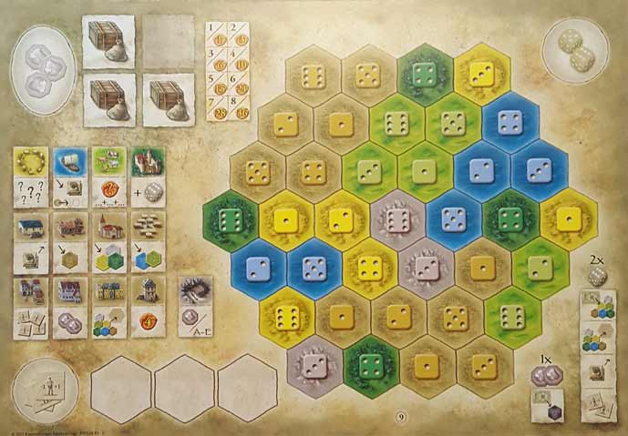

In this The Castles of Burgundy review, D and Will analyze the 2011 Euro-style, dice-rolling board game from Ravensburger and alea. Designed by Stefan Feld, this game has its players rolling dice, choosing from a number of actions, and building up their estate in a predetermined pattern. The player who does this most effectively will earn the most victory points and subsequently win the game. Over the years, this game has become a classic, but is it worthy of its praise? We try to determine that and more in our reviews below.
D reviews The Castles of Burgundy
 (Author’s
note: this review is meant to accompany our gameplay video and will not
go in-depth on the game’s rules. If you’re interested in learning how
the game is played, please watch the video. It’s not bad.)
(Author’s
note: this review is meant to accompany our gameplay video and will not
go in-depth on the game’s rules. If you’re interested in learning how
the game is played, please watch the video. It’s not bad.)
I realize that this opinion is unlikely to win me many fans, but The Castles of Burgundy has left me feeling really cold. I get why it’s highly regarded by so many people – mechanically, this game is absolutely rock solid and highly replayable. But now, after having played it a few times… I kind of don’t want to play it again. It doesn’t excite me or make me want to get a better understanding of its strategy. I’ve played it, and I don’t regret that I’ve played it, but I’ve also played a lot of games like this and I’m not sure The Castles of Burgundy has any one element that really separates it from the (ever-growing) pack in my mind. It probably doesn’t help its cause that we played Heaven & Ale recently, a newer game that I really enjoyed, with which it shares some obvious similarities. Specifically, tile-based tableau building, player interaction limited mainly to tile denial, a good number of options in terms of strategy, and a medieval European setting. And I just can’t help but feel like Burgundy’s blending of these aspects was done somewhat less successfully.
I think The Castles of Burgundy suffers from a lack of scarcity and tension. I know that Euros are generally more “peaceful” experiences, but it rarely feels like there are any stakes to worry about whatsoever. Sure, your dice rolls might not always be optimal, but the game provides good flexibility with the worker tokens. And, even if you can’t fudge your rolls as much as you’d like, there’s basically always something productive you can do on your turn, be it taking a tile, collecting workers, or selling some goods. I admit that this probably sounds like an unusual criticism – always having something to do on your turn is generally a good thing – but in this case I think the game goes a bit too far in being forgiving. In fact, I would hesitate to even call it competitive. At the end of our video (Spoilers), I had lost, but my reaction was basically a mental shrug of the shoulders. Part of that was due to the fact that it was obvious about halfway through the game that Will was going to win. However, another source of this apathy was that I thought we had all done perfectly fine jobs of establishing highly functional estates and the actual differences between any of them wasn’t particularly obvious. And much of the blame for this lack of distinction can be directed at the game’s scoring system and use of theme.
If I had to describe The Castles of Burgundy’s use of theme in one word, it would be “perfunctory.” Or maybe “superficial.” Or, possibly, just “extant.” It has one, but absolutely nothing outside of the game’s title would lead me to believe that it’s set specifically in France. (As an aside, if you’re not going to incorporate France’s rich history and culture into the game, why not choose a more unique setting to give the game an extra bit of flair? How about somewhere in Africa? Or South America? Or on the moon?) But whatever, you’re in France and in control of some land, and you need to do something with that land. And that’s it. You never get the sense that you’re gaining any power, either individually or in relation to your opponents. Are those buildings and (thematically questionable) knowledge tiles you have necessarily superior to your opponents’ ships and farm animals? Is success mostly just dependent on not doing the same thing as your opponents? It’s not very clear, and I think the game could maybe use an extra system, perhaps a market or government, where players can actually throw the weight of their princedoms around in order to make their strengths and weaknesses more tangible. Kingdomino is a game that has a similar theme and it clearly rewards cohesion and collecting crowns. Heaven & Ale’s theme is also similar, and it informs that game’s intricate and clever scoring system. When it’s over, it makes perfect sense why the winner’s beer was the best of the bunch. With Burgundy, everything feels a little too subjective to be truly satisfying or disappointing.
The overall production of The Castles of Burgundy also leaves something to be desired. The art is functional, but bland. It certainly doesn’t inspire much excitement as you’re taking it out of the box. And again, nothing about it even whispers “France.” It’s Burgundy! Throw in a vineyard somewhere! A quick google search makes it clear that the art doesn’t do its setting justice. At least the box is burgundy is color. The components are functional, but there’s a bit of cheapness to the cardboard pieces. I can forgive this though, given that it’s probably a necessary evil in order to keep the game’s price down. The rulebook is good, and it needs to be. You’ll be referencing it often until you’re more familiar with the game’s shorthand symbology. Overall though, this is not a game that you get for how it looks, it’s a game you get for how it plays.
And again, I really can’t fault the mechanics at their very core. The way that tiles are taken, played, and delivered in relation to the dice is pretty clever and doesn’t get boring. And while the goal of the game is a somewhat uninspiring “get points”, it’s easy to admire the flexibility the game allows in coming up with strategies to work towards that goal. The game can drag, especially with new players or higher play counts. I’d probably recommend this mainly for just two players or maybe three very experienced ones. Otherwise you’re looking at least at a two-hour session, and I just don’t think the game is engaging enough to warrant such a lengthy commitment. The Castles of Burgundy is not a bad game, but its many elements don’t add up to offer the kind of entertainment I usually find myself looking for when I play a board game. A lot of people love it though, so check it out if you think it might be for you.
D’s Rating: Three Stars out of Five.
Will reviews The Castles of Burgundy
 We
don’t often play well known, highly regarded, Euro-style board games at
Board Crazy. It’s not that we don’t like them; it’s that we often don’t
have enough time for them and that we like to feature quicker, more
competitive games on the channel. However, every once and a while we
branch out and give one a go, which is what we did this week with The Castles of Burgundy.
This is a game that has a reputation for being fair, intelligent, and
suited for smaller groups. After playing it a few times, I’d say this
reputation is earned, although many games have surpassed it over the
years, making it seem… a bit bland.
We
don’t often play well known, highly regarded, Euro-style board games at
Board Crazy. It’s not that we don’t like them; it’s that we often don’t
have enough time for them and that we like to feature quicker, more
competitive games on the channel. However, every once and a while we
branch out and give one a go, which is what we did this week with The Castles of Burgundy.
This is a game that has a reputation for being fair, intelligent, and
suited for smaller groups. After playing it a few times, I’d say this
reputation is earned, although many games have surpassed it over the
years, making it seem… a bit bland.
Speaking of blandness, my goodness The Castles of Burgundy’s components are boring and uninspired. I understand Euros stand tall upon their mechanics instead of their art and themes, but come on – this is unacceptable. There’s so much brown, green, and greenish brown. Heck, even the yellow has a greenish, unappealing hue to it. And nothing about it really screams Burgundy or even France to me. This game could’ve just as easily been called The Castles of Cornwall and I would’ve believed it. Sure, I’m an American and therefore perhaps a bit unsophisticated and unworldly, but I’m fairly certain most people aren’t transported to east-central France when playing this.
What makes the stale visuals even more bothersome is the fact that the gameplay really needs some enlivening that colorful, arousing artwork could’ve provided. Don’t get me wrong, I actually like TCoB’s gameplay, but at the same time, it’s about as unpredictable as an episode of Antiques Roadshow. I acknowledge that Euros are often fairly predictable, but only to an extent. Take Heaven & Ale for example – it’s a similar game but it manages to have genuine moments of spontaneity and randomness. In that game, you never know if you’re going to have access to the ingredients you need in any one moment. In TCoB, you’ll almost always have a way to collect what you need tiles-wise because there are so many of them.
Perhaps I’m getting ahead of myself a bit, because there’s actually quite a bit I like about this game’s gameplay. It may be predictable and safe, but that much certainty creates a calm, cool-headed environment, which is what I prefer when taking to the tabletop. TCoB’s gameplay is actually built around a dice-rolling mechanic, which seems rather un-Euro-y but absolutely works here. Every D6 roll leaves you with something to do. Oh you rolled a five? Then collect a tile from the corresponding depot. There’s nothing there you want? Then place a tile on your player board at a five spot. Don’t want to do that? Okay, trade your five for a couple of worker tiles. Because this game provides you with an abundance of meaningful actions, it found a way to negate the randomness of dice-rolling.
Then again, isn’t randomness part of the fun of dice-rolling? I really believe that TCoB would’ve been better if it was slightly harder, and offering fewer ways to manipulate your dice would’ve helped in that regard. With that in mind, the worker tiles seem especially frivolous when you consider that there’s already several Knowledge tiles that also allow you to change die values by +1/-1. Or maybe instead, limit the amount of worker tiles that a player can have at any time, or even better, limit how many they can use at a time. If you craft your strategy around the collection and utilization of worker tiles, TCoB becomes really easy, and more disappointingly, almost effortless.
On the bright side, since this game rarely challenges you that much, you’ll always know what to do on your turn. There aren’t too many moments where someone has to stop and really consider his or her strategy for longer than 30 seconds. Because of that, TCoB moves at a relatively brisk, consistent pace, which is definitely something I appreciate. However, after five phases consisting of 5 rounds each, the overall playtime will inevitably be well over an hour, at least with three or more players. Sure, this game isn’t that challenging, but you still have to think and strategize. And when you sit around thinking about your turns and staring at bland browns and greens for 90 minutes, this game really starts to drag. Maybe it’s better that you play five phases so everyone gets a chance to mostly fill up their player boards, but in reality, it’d probably be best to play three phases and call it a day.
Nonetheless, TCoB’s rulebook and scoring system are superb. Starting with the rulebook, it’s written in such a way that a relatively complex board game becomes easy to pick up and play in under a half hour. Pretty much everything is where it needs to be in the rules, so top marks there. Also, the game’s scoring is quite brilliant. You earn points for completing regions, covering entire colored sections of your board, selling goods, and then there are even some additional ways to score and catch up during the endgame. If I had to nitpick about the scoring, it’s that since you keep track of your total in the moment, it can become apparent when someone is running away with the lead. And in a game where everything is so consistent and structured, it can become quite obvious when you’re going to lose. That’s disheartening if it happens too early and can spoil the mood of any session.
As I said in my intro, many games have surpassed The Castles of Burgundy since its release in 2011. That being said, it’s important to remember that many of those games were likely inspired in one way or another by this one. What this game did well has been copied, and what it did poorly has been altered. TCoB’s design could easily be seen as exemplary, since it’s so balanced, fair, and cordial. But that’s just it – it’s too much of those things, so much so that it sabotaged itself. It’s not that challenging and for that reason, it doesn’t cultivate much competition. That fact may resonate with you – I know it does with me, somewhat. At the same time, I was left wanting more, even when I was victorious. Nevertheless, I acknowledge that TCoB is a really good Euro-style board game. It’s just that sometimes, on the tabletop, it is possible to have too much of a good thing.
I give The Castles of Burgundy a: B
Leave a Reply
You must be logged in to post a comment.